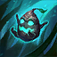
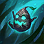

MAOKAI GUIDE PATCH 12.19

 

52.14% WR
WHY MAOKAI?
Even though Maokai's early game is quite weak you can easily get picks with your W+E combo and you will only get stronger as you scale into late game. Also Maokai is really good at roaming especially since he has point and click CC and quite decent movement speed as you will build Boots of Swiftness into Dead Man's Plate. As Maokai your ability to influence teamfights is really good by picking the carry with your W+Q and also CCing the whole enemy team with your R while also dealing decent damage for a tank support.
One thing to keep in mind while playing Maokai is your low mana pool that can rapidly deplete in the early game. Also while Maokai is more able to carry than other supports he is still very reliant on his team and if you don't build Sunfire or other damage items you will have a hard time dueling.


RUNES
Aftershock is a great rune since almost all of your abilities (except your E) proc it. Also Font of Life is a great choice sing Maokai has lots of CC so it's very easy to proc it. The reason I don't recommend playing Magical Footwear is because I like to roam early and having boots allows you to do so faster but it is a solid choice if you want your core item faster.
RECOMMENDED SKILL PATH
| Q | Q | Q | Q | Q | ||||||||||||||
| W | W | W | W | W | ||||||||||||||
| E | E | E | E | E | ||||||||||||||
| R | R | R |
At level 1 I would recommend going W for the CC, but you can start any other ability since you're not going to be fighting until at least level 3. The reason you don't max W first is because it only scales by 0.1s per level so it's more worth to max Q first. If you are going AP you might want to give more love to E but since Maokai tank is way better I would recommend against AP Maokai.
At level 6 Maokai gets a power spike and can easily secure kills with R. One trick is to aim the ultimate perpendicularly on the direction of movement of the enemy. It makes hitting your ult much more easier. Also although you don't max E, it's still a really valuable tool for setting up fights, poking and facechecking brushes.
ITEMIZATION
Recommended item path:

For your starter items you can get either Relic Shield or Steel Shoulderguards + 2 pots. As for boots I would recommend Boots of Swiftness for roaming, but Ionian Boots are a great option too. After boots you will build Dead Man's Plate. Regarding your mythic Evenshroud is the best option as for patch 12.19. Everything after this is highly matchup dependant and you can build any tank item.
Other item options:
If you do not plan on roaming a lot Ionian Boots is the way to go. It is very gold efficient item that should not hinder you getting your core item too much. Also the Ability Haste that it provides is very valuable since Maokai's R cooldown is getting nerfed in the next patch.

Zeke's Converge is a moderately cheap tank support item that allows your liked ally to deal more damage when you hard CC someone. Since most of your abilities count as hard CC it is a very good item on Maokai.
Vigilant Wardstone is a valuable item for any support that provides HP and the ability to hold 3 control wards at a time and have 2 control wards and 4 stealth wards placed at all times. It's an extremely impactful item especially on champions that build HP.
Knight's Vow is a good protect the carry kind of item especially if your adc or someone on your team is hyper fed and you need to keep them alive. With this item a percentage of their taken damage is dealt to you and you get healed by a percentage of your linked ally's dealt damage.